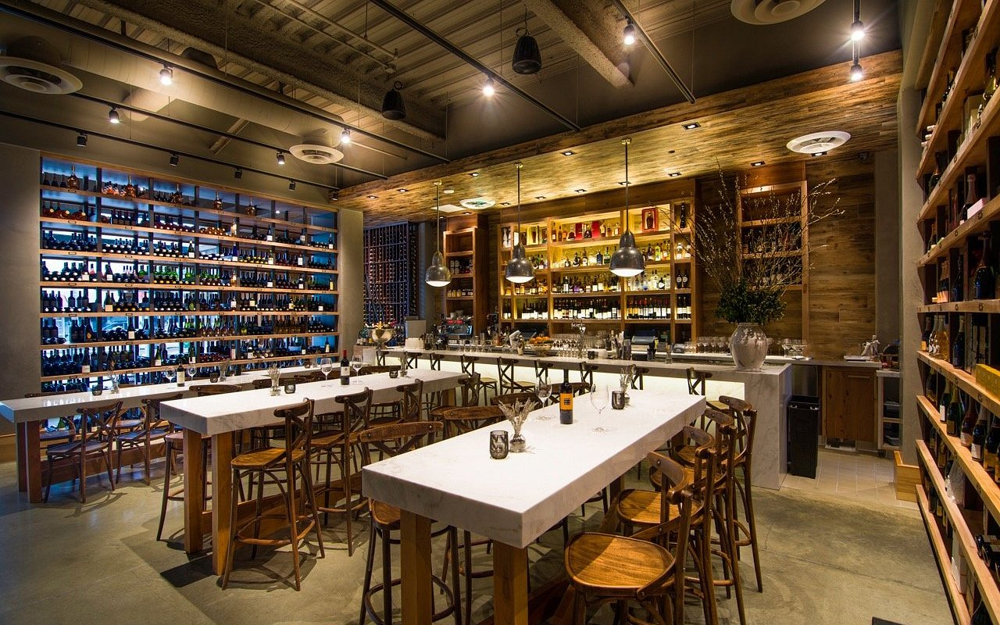

Wally’s Chicureo
Hamburguesería gourmet
Hamburguesería premium con recetas contundentes y papas estilo street food, en un ambiente moderno y relajado. Ideal para salidas informales en familia o con amigos, o para resolver un almuerzo rápido sin sacrificar calidad.